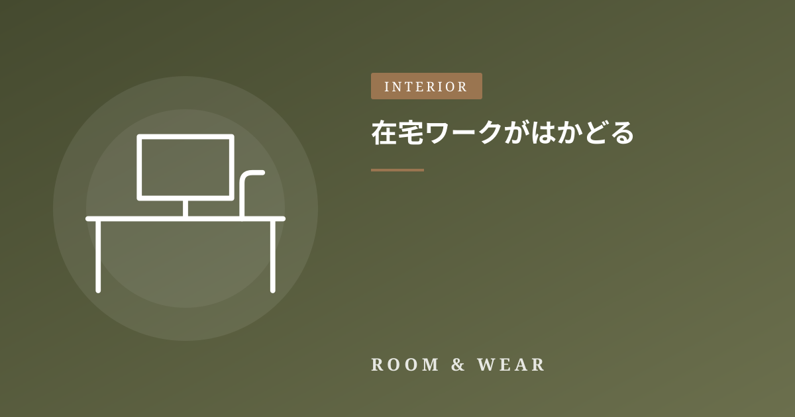
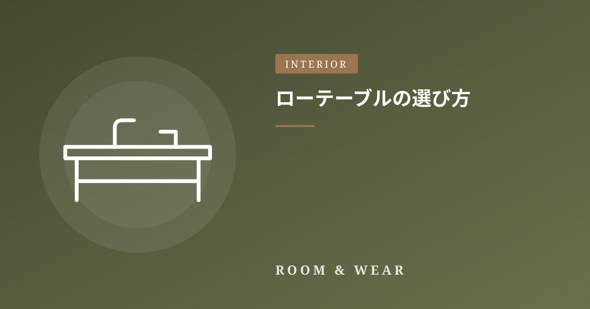
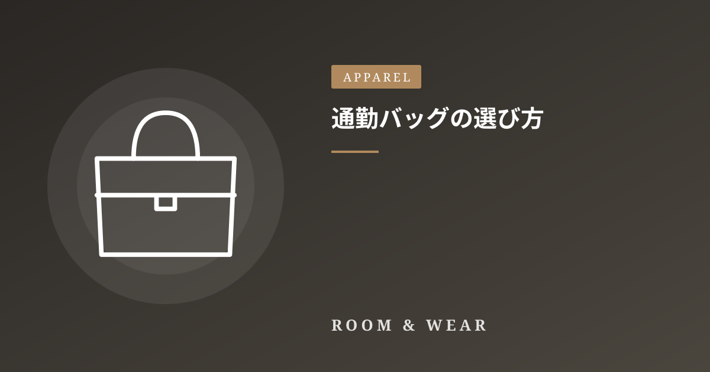

自宅の仕事環境を整えたい
在宅ワークや勉強がはかどるデスク周りの整え方と、作業しやすい照明や家具の記事をまとめました。

インテリア在宅ワークがはかどる。デスク周りの整え方と揃えたいアイテム
長時間座っても疲れにくく、集中しやすいデスク環境のつくり方。デスク・椅子・照明・配線の順にポイントを解説します。
 インテリア
インテリア間接照明で部屋の雰囲気を変える。照明の選び方と置き場所
照明を変えるだけで、部屋の印象は大きく変わります。色温度の選び方と、間接照明を置くと効果的な場所をまとめました。

インテリアローテーブルの選び方。高さ・形・機能で使いやすさが変わる
一人暮らしの部屋の中心になるローテーブル。ソファとのバランスや、形・機能の選び方を紹介します。

アパレル通勤バッグの選び方。リュック・トート・ショルダーを比較
毎日使う通勤バッグは、荷物の量と服装に合わせて選ぶのがポイント。タイプ別の特徴と選び方を紹介します。